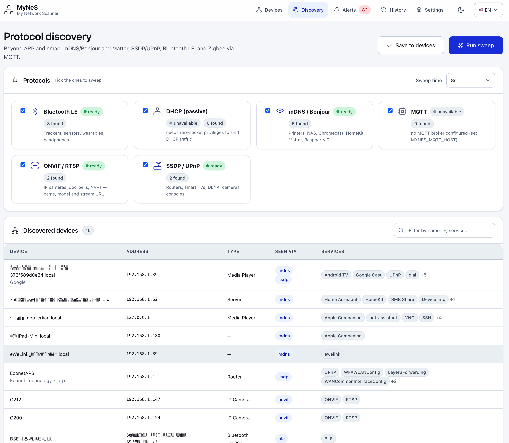
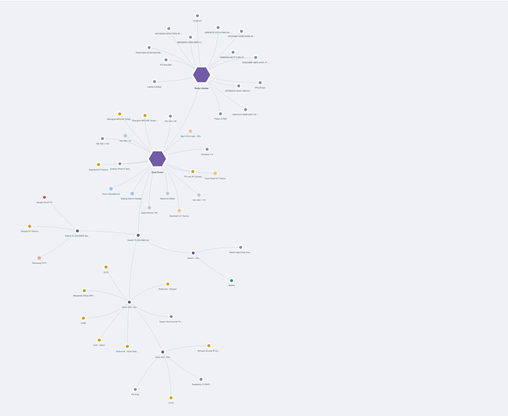
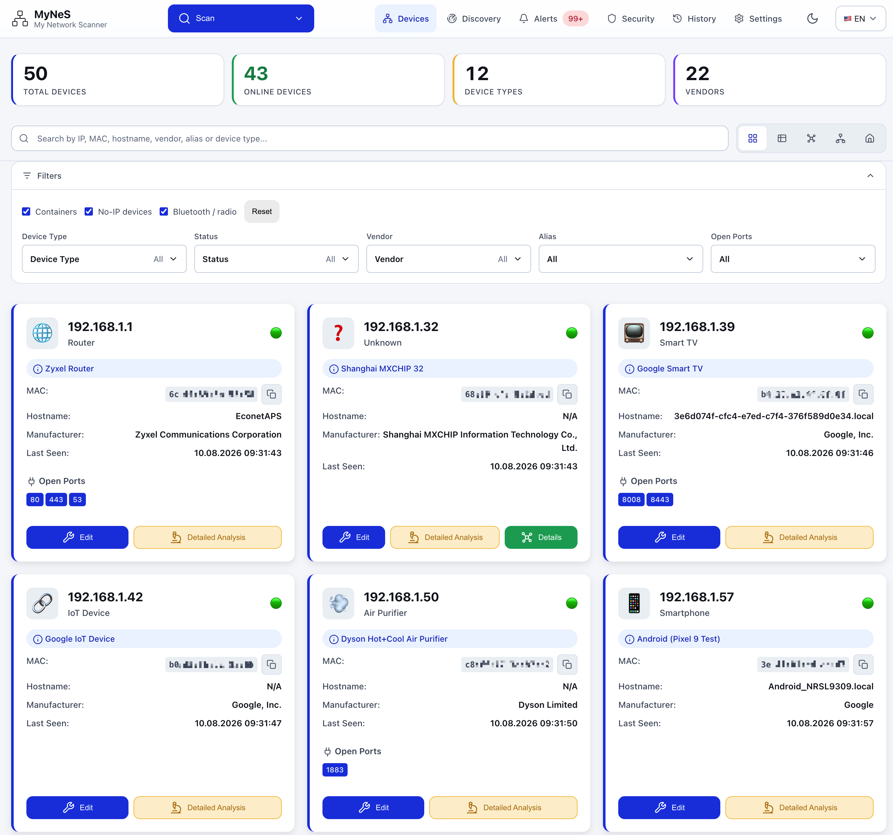
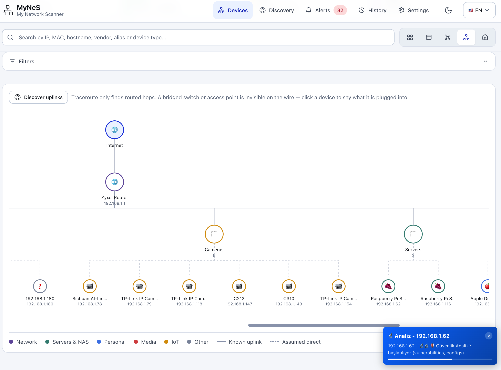
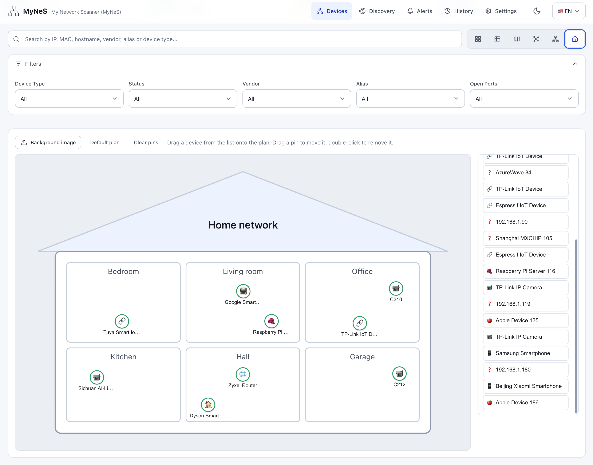
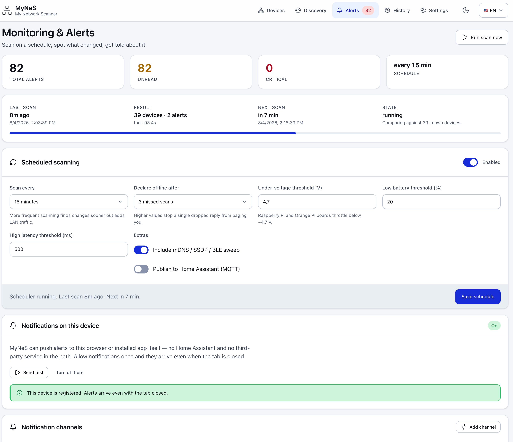
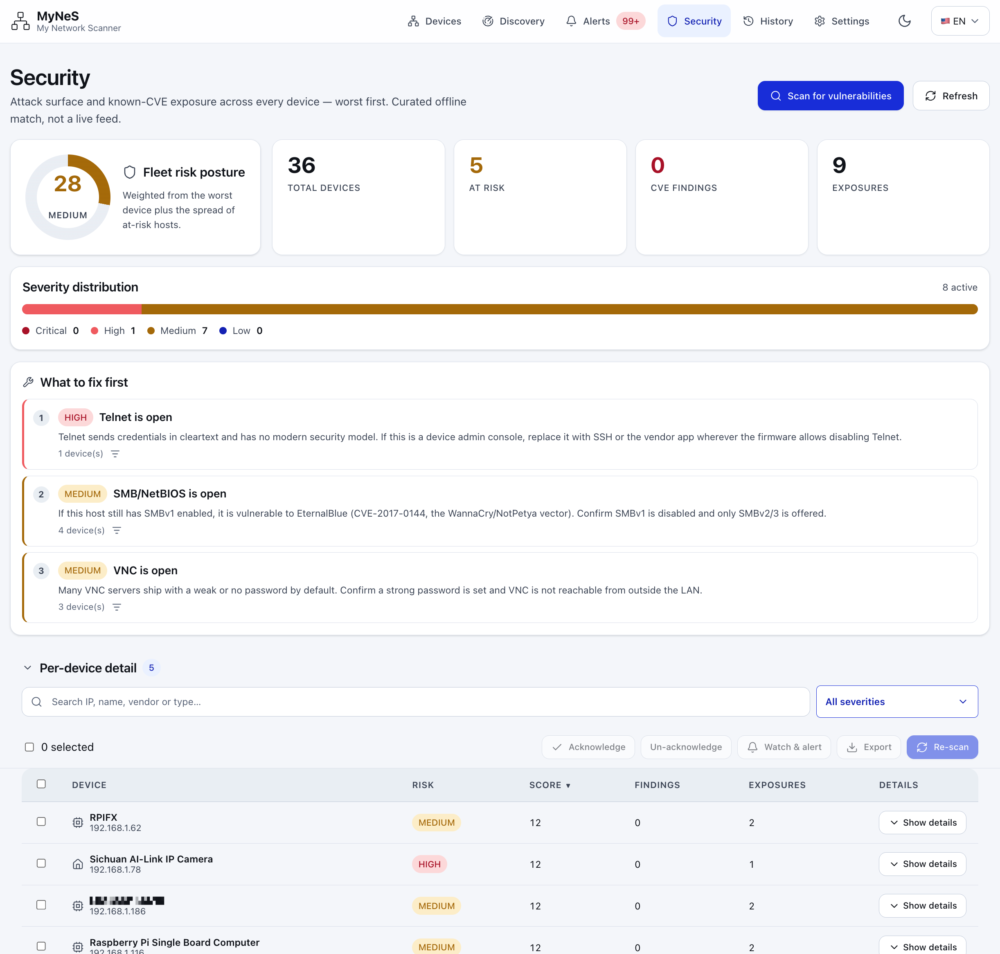
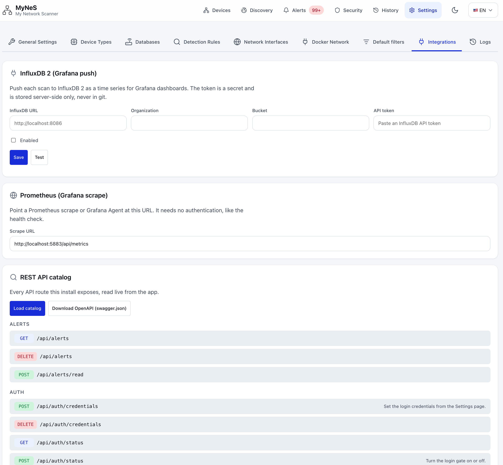

%WEB%
Web-based interface
A modern, responsive, user-friendly web UI for managing your network.
See every device on your network — your family's user-friendly network scanner.
A self-hosted, open-source application that scans every device on your local network — routers, laptops, phones, IP cameras, consoles, smart-home appliances — and lets you manage them from a modern, user-friendly web interface. Advanced scanning, AI-powered device identification, and security analysis included.
From a fast ARP sweep to AI-assisted identification, MyNeS turns a wall of IP addresses into an inventory you can actually read.
A modern, responsive, user-friendly web UI for managing your network.
Determines your local network range automatically.
Uses the ARP protocol for fast device discovery.
Comprehensive service detection across 1000+ ports.
Automatically detects routers, computers, phones, cameras and more.
Detects running containers and virtual network interfaces.
SSH, FTP, HTTP and SNMP support for deeper detection.
Edit device info, add custom attributes and manual ports — and your edits survive every rescan.
“Identify with AI” via Anthropic, OpenAI or OpenRouter (optional, bring your own key). The MyNeS AI service turns raw fingerprints — MAC, open ports, banners, mDNS/SSDP records — into a confident device name, type and OS guess.
A weighted fleet risk score, severity distribution and per-device CVE exposure, worst first — matched offline against each device's fingerprint.
IEEE OUI database with 37,000+ vendor records and online API fallback.
Full Turkish and English UI — switch language anywhere in the app.
MyNeS listens to everything that announces itself: mDNS/Bonjour (printers, NAS, Chromecast, HomeKit), Matter, SSDP/UPnP (routers, smart TVs, cameras, consoles), Bluetooth LE (devices with no IP at all) and Zigbee/Z-Wave over MQTT.

The device list can be read four ways, switched from the toolbar. Pick a view.
Subnet gateways sit as hubs; every device hangs off the segment it lives on. A host's Docker networks nest under the host that runs them.

The dense view for reading device attributes and editing many at once.

Internet → router → switch / AP → group → device, laid out as the physical path.

Place each device in the room where it actually lives.


Scans on a schedule, diffs consecutive scans and reports what matters. Delivery via MyNeS's own Web Push, a Home Assistant notify service, ntfy, Telegram, webhook, Slack, Discord and email.
The Security page shows the whole fleet's attack surface and known-CVE exposure, worst first (curated offline match, not a live feed): a weighted fleet risk score, severity distribution, a “what to fix first” list and per-device detail. Credentials are stored with Fernet symmetric encryption and sanitized on export.


Settings → Integrations offers InfluxDB 2 (Grafana push), Prometheus (Grafana scrape) and the app's full REST API catalog, read live and downloadable as OpenAPI (swagger.json). Home Assistant integration works via MQTT Discovery (push) and REST/WebSocket (pull), and there is a dedicated Home Assistant add-on that runs MyNeS as a one-click Supervisor add-on — add the repository, install, and it shows up in your sidebar.
Ayarlar → Entegrasyonlar; InfluxDB 2 (Grafana push), Prometheus (Grafana scrape) ve uygulamanın tüm REST API kataloğunu sunar — canlı okunur ve OpenAPI (swagger.json) olarak indirilebilir. Home Assistant entegrasyonu MQTT Discovery (push) ve REST/WebSocket (pull) ile çalışır; ayrıca MyNeS'i tek tıkla Supervisor eklentisi olarak çalıştıran özel bir Home Assistant eklentisi vardır — depoyu ekleyin, kurun, kenar çubuğunuzda belirir.
The image is published for linux/amd64 and linux/arm64, so it runs on a Raspberry Pi or Orange Pi as-is.
linux/amd64 ve linux/arm64 için yayınlanan imaj, Raspberry Pi veya Orange Pi üzerinde olduğu gibi çalışır.
services:
mynes:
image: fxerkan/my_network_scanner:latest
container_name: mynes
# Host networking is what lets it actually see the LAN.
network_mode: host
cap_add:
- NET_ADMIN
- NET_RAW
volumes:
- ./data:/app/data
- ./config:/app/config
environment:
MYNES_PORT: 5883
MYNES_PASSWORD: ""
restart: unless-stoppeddocker run -d \
--name mynes \
--network host \
--cap-add=NET_ADMIN \
--cap-add=NET_RAW \
-v "$(pwd)/data:/app/data" \
-v "$(pwd)/config:/app/config" \
-e MYNES_PORT=5883 \
--restart unless-stopped \
fxerkan/my_network_scanner:latestgit clone https://github.com/fxerkan/my_network_scanner.git
cd my_network_scanner
python scripts/run.pydocker compose up -d.http://<your-server-ip>:5883.NET_RAW / NET_ADMIN let MyNeS send raw ARP frames and hear mDNS/SSDP multicast. It never runs as root or privileged.python scripts/run.py creates the virtual environment, installs dependencies, checks for nmap and starts the app.Full step-by-step setup, configuration and troubleshooting live in the Docs. Only scan networks you own.
docker compose up -d komutunu çalıştırın.http://<sunucu-ip>:5883 adresine gidin.NET_RAW / NET_ADMIN, MyNeS'in ham ARP çerçeveleri göndermesini ve mDNS/SSDP çoklu-yayınını duymasını sağlar. Uygulama asla root olarak veya ayrıcalıklı çalışmaz.python scripts/run.py sanal ortamı oluşturur, bağımlılıkları kurar, nmap'i kontrol eder ve uygulamayı başlatır.Adım adım kurulum, yapılandırma ve sorun giderme için Dokümanlar'a bakın. Yalnızca kendi ağlarınızı tarayın.
Free, MIT-licensed, and self-hosted. Clone it, or pull the image and be scanning in under a minute.